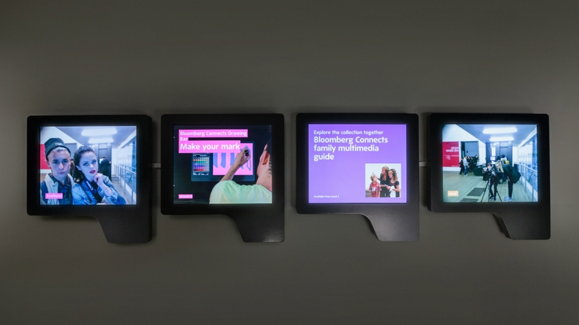
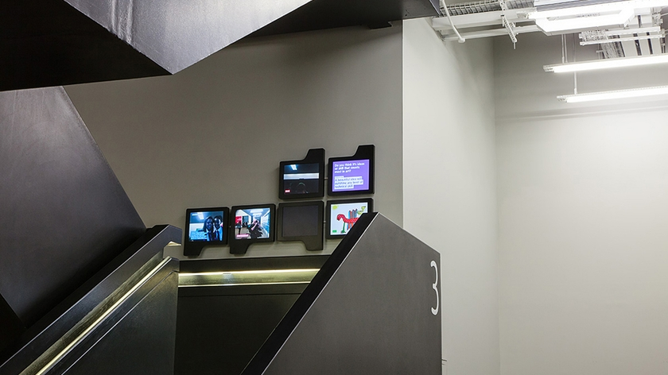
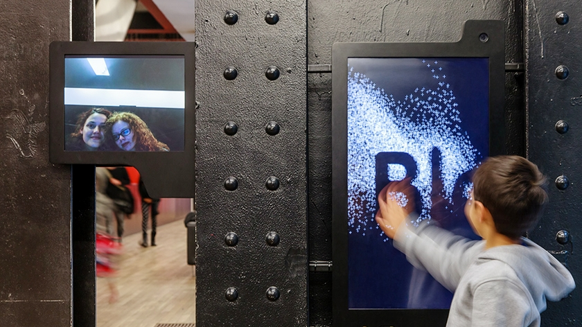
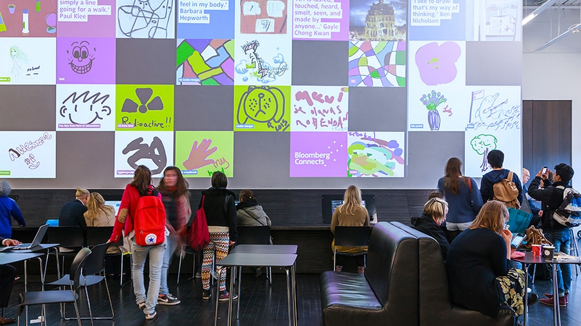
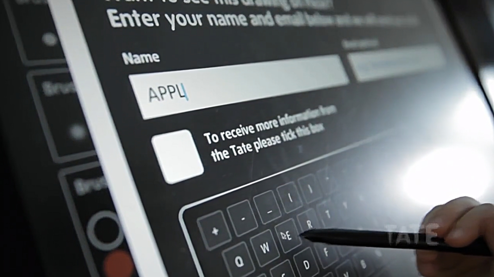

A computer controlled kinetic installation for the window display of ELTTOB TEP ISSEY MIYAKE. The installation took place for promotion of their newly adopted fabric called Organdie, a super light and thin cloth.





Team Member
Hiroshi Takahashi Producer
Sho Narita Producer
Takashi Aoki Design Direction Visual Design
Software Prototyping